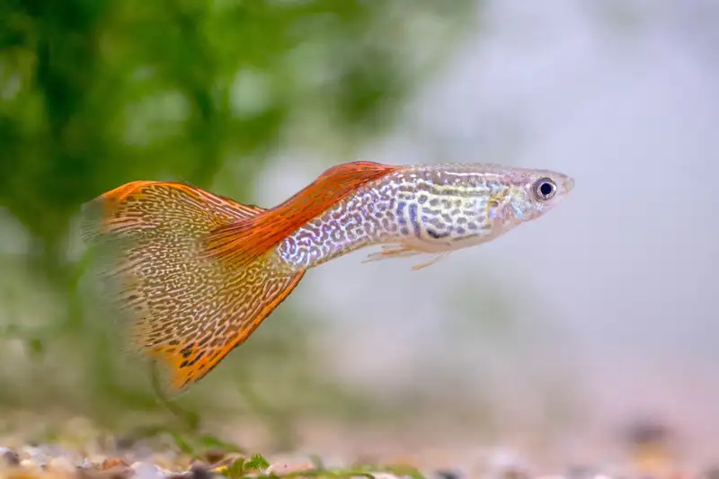
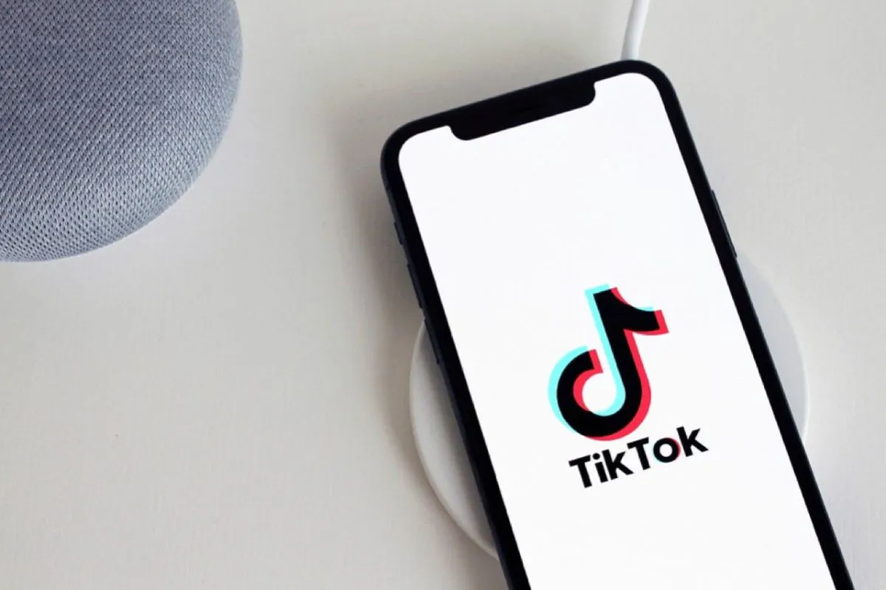

Mengenal Ikan Guppy
Ikan guppy, atau yang juga dikenal sebagai Poecilia reticulata, adalah salah satu ikan air tawar paling populer di dunia aquascape dan akuarium hias. Dikenal dengan warna-warni yang mencolok dan pola ekor yang unik, Baca Selengkapnya

Mengenal TikTok affiliate: ini syarat dan ketentuannya
TikTok affiliate program resmi diluncurkan pada tahun 2021. Program ini memberikan kesempatan bagi pengguna TikTok untuk memonetisasi konten mereka dengan mempromosikan, Baca Selengkapnya
10 Coding Dasar HTML yang Blogger Wajib Tahu
Untuk menjadi seorang blogger yang baik, kemampuan blogging saja tidak cukup. Anda perlu mengoptimasi SEO supaya performa blog lebih maksimal. Salah satu caranya yaitu dengan memahami coding HTML dasar untuk blogger. Baca Selengkapnya
Tips dan Cara Memulai Bisnis Sendiri
Cara memulai bisnis mungkin terlihat sulit bagi seseorang yang baru pertama kali ingin terjun ke dunia usaha. Dalam berbisnis sendiri, diperlukan wawasan atau pengetahuan untuk melakukannya, Baca Selengkapnya